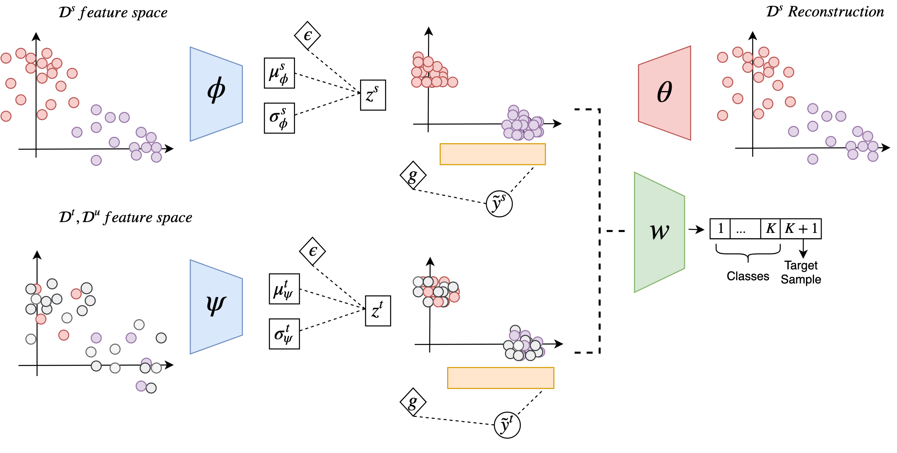

Hi there! I'm
Manuel Pérez Carrasco
Subdirector and Lead Data Scientist at Unidad de Data Science UdeC. I am research collaborator at the Harvard IACS and the Millenium Institute of Astrophysics through the ALeRCE initiative. I am interested in different topics, most of them related to deep learning learning applied to images and time series.
Keep looking for more information about my work :)

Con2DA: Simplifying Semi-supervised Domain Adaptation by Learning Consistent and Contrastive Feature Representations
In this work we explored the using of different data augmentation and semi-supervised techniques in order to improve generalization in the semi-supervised domain adaptation context. In this work we show that (i) learning of the consistent and contrastive feature representations is crucial to extract good discriminative features across different domains, and ii) our model benefits from the use of strong augmentation policies. With these findings, our method achieves state-of-the-art performances in three benchmark datasets for SSDA. This work was presentd in the NeurIPS 2021 Workshop on Distribution Shifts.
[Paper] [Cite]

Masters Thesis
Semi-supervised Domain Adaptation for Image Classification Through Generative Models
Deep learning models have demonstrated to be very good at discovering underlying patterns in the data. But for these models works correctly it is usually needed a large amount of annotated data in order to avoid the overfitting and be able to generalize over new data. Unfortunately, in real-life cases, labeling data is costly and time-consuming. Domain adaptation models aim at generalizing a model trained in a vast annotated source to perform well in a low annotated target by finding a common-shared representation between them.
I started this project as my master thesis adviced by Guillermo Cabrera, and Pavlos Protopapas. We tackled the problem using recent advances in semi-supervised learning and generative models, and our model outperformed the state-of-the-art in low-dimensional benchmarks. This work was awarded Best Student Paper Award at the Astroinformatics 2019 Conference.
[Preprint] [Presentation]
[Cite]

* The largest social strike in the history of Chile. More than 1.2 million people gathered protesting in the center of Santiago.
Oct 25th, 2019
Understanding Social Requirements for the upcoming Chilean Constitution
The upcoming Chilean constitution represents one of the huge challenges for the country, specially regarding the analysis and understanding of the citizen's requirements and desires. For that reason, we carried out an analysis of the councils and citizen proposals in order to understand the primary requirements of the people. This analysis served as a statistical basis in the discussion for the generation of articles within the constitution. In this project, I led the technical development and analysis team.
This project was requested by Chilean constituents.
[Website]
Undestanding the Chilean Social Outbreak
El Chile que Queremos (The Chile we Want) is an interinstitutional initiative between four Chilean universities (UdeC, UChile, PUC, UDD). Our objective is to investigate and understand the emotions and social needs that caused the 2019's Chilean social outbreak and generated the upcoming change in the Chilean constitution. In this project I led the technical development and analysis team.
This project was requested by the Chilean Ministry of Social Development and Sciences.
[Repository]

Real-time EEG-based Drowsiness Detection Algorithm
Drowsy driving is a major problem in road safety. This issue is responsible for a huge number of crashes, injuries, and deaths along the world.
Working at the Biomedical Laboratory of UdeC, I was responsible for implementing a machine learning system for drowsiness detection using electroencephalography (EEG) signals extracted from a 16-channels g.Nautilus EEG headset. I faced some challenges, such as the need for a reduced number of channels to consider the ergonomic nature of the system, the high cost of the signal labeling process, and the need for real-time detection. Thereby, we are implemented a transfer learning algorithm that learns from vast annotated public sources and uses that knowledge to improve the performance of our low annotated signals. Thus, we efficiently reduced the number of channels, while maintaining the same labeling efforts. Moreover, the system is running almost in real-time!
This project was funded by the "Fund for the Promotion of Scientific and Technological Development" (FONDEF). Unfortunately, the repository will not be publicly released.

DeepHub
The wood industry is one of the most important economical sectors in Chile, representing almost one sixth of total exports, placing it as the second-largest export sector of the country. In this context, ARAUCO is one of the bigger wood companies in South America, and an important competitor globally.
For this sector, the information about the number of trees in a field is essential because it helps to estimate productivity, evaluate the density of the plantations, and detect errors occurring during the seedling process, opening the possibility for efficient replanting.
ARAUCO Deep-Hub is a software that uses Cloud Infrastructure and Deep Learning algorithms for labeling, training, and predicting statistics using high-dimensional RGB georeferenced images from high-resolution drone cameras. For this project I designed and implemented Deep Learning algorithms that solve the aforementioned problems. I developed two algorithms based on state-of-the-art works. One was YOLOv3, a famous algorithm for real-time object detection in images that allow us to detect trees and therefore count them. The second algorithm was Mask RCNN, an instance-segmentation algorithm, which detect trees and segmentate them at the same time, allowing us to estimate the density of the plantations. Also, I designed the required algorithms that works as an interface between the deep learning algoritms and high-dimensional data. Our approach presents a low-cost solution, in contrast to expensive multispectral, hyperspectral, and LiDAR-based solutions. This project was the winner of the innovation challenge of ARAUCO Company.
Paper under review. Unfortunately, the repository will not be publicly released.

Undergrad Thesis
Attributes Transfer in Deep Neural Network Aplied to Astronomical Images
The galaxy evolution through time is one of the key questions of modern astrophysics and the study of their morphologies represents a fundamental and powerful diagnosis to evolutionary changes of galaxies.
Thus, advised by Guillermo Cabrera, during my undergraduated honor research thesis we created a new catalog of galaxy morphologies for “Cluster Lensing and Supernova survey with Hubble (CLASH)” using deep neural networks.
One of the problem of this approach is the data required a lot of time of expert astronomers to be labeled. Fortunately sometimes it is possible to find similar or related other sources available and we can take advantage of them to make our few labeled target data performs better. For this project, we took advantage of a vast labeled source named “The Cosmic Assembly Near-infrared Deep Extragalactic Legacy Survey (CANDELS)” consisting of images associated with 5 different galaxy morphologies labeled by expert using visual inspection. We used the same taxonomy and created a few eyeball labels. As in some cases there exist disagreement between expert opinions, we handled as regression problem. Moreover, we used different deep learning architectures and a transfer learning technique named fine-tuning, to finally show the effectiveness of this method. Finally, we released a public Catalog of 8,412 galaxies in 25 different photometrics filters from CLASH.
[Paper] [Repository] [Cite]